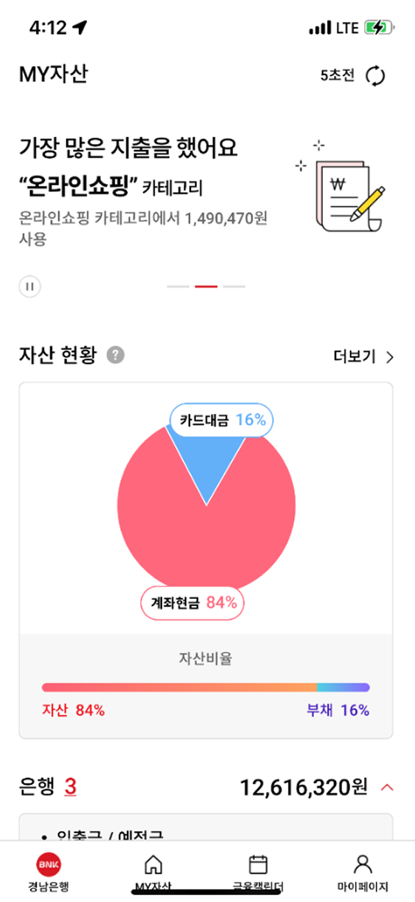
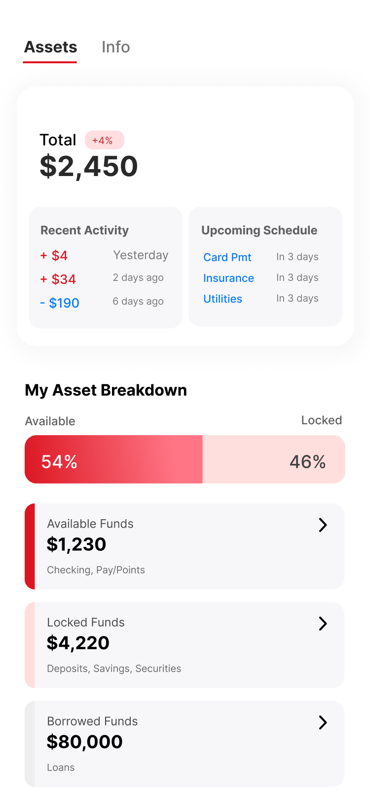
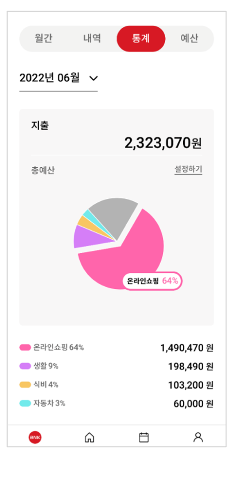
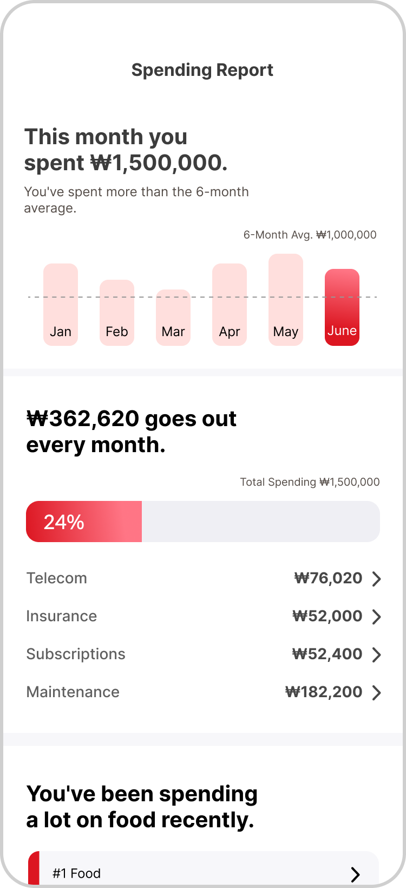
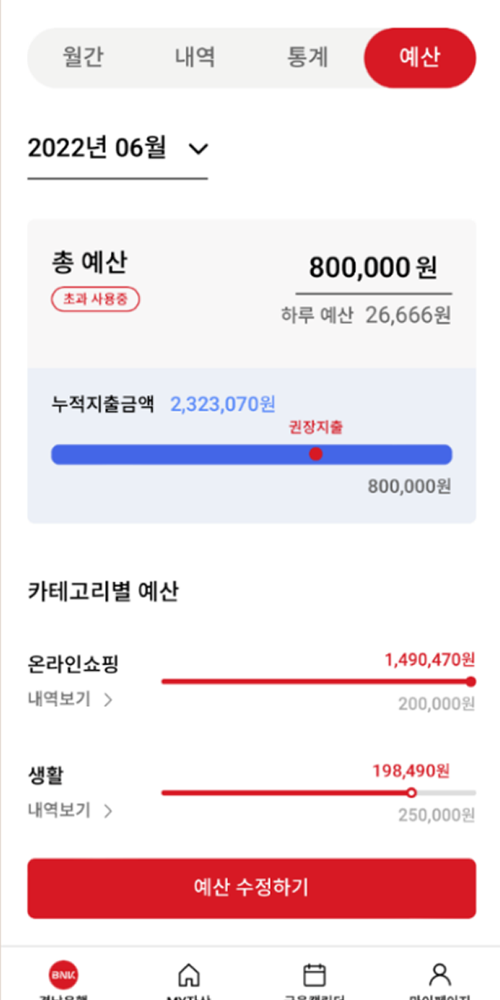
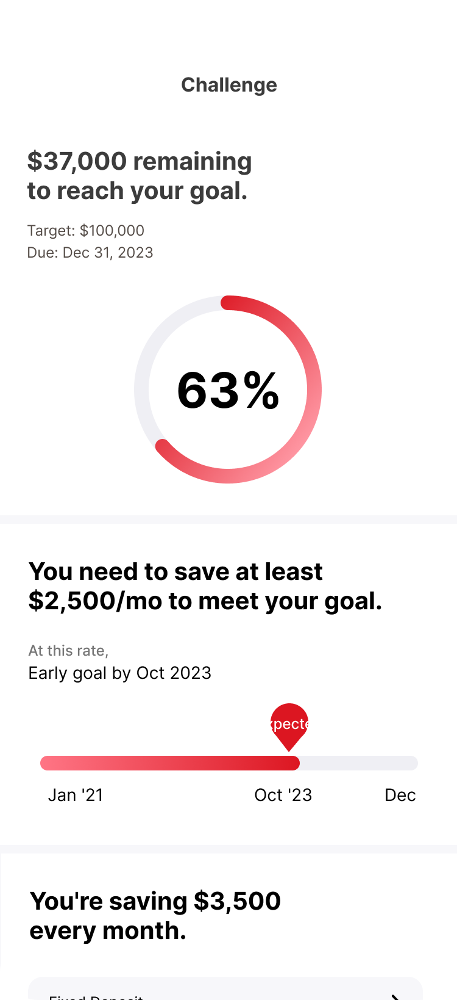

Persona-Driven Feature Redesign
MyData UI/UX Redesign: From Supplier-Centric Features to Generation-Specific Asset Management
Rebuilding a declining MyData asset-aggregation feature around two persona-based user journeys instead of a supplier-side feature checklist.
Overview
BNK Kyungnam Bank's mobile banking app launched a MyData asset-aggregation feature in January 2022, but subscriber growth and daily active usage were both trending downward within months of launch. I led a redesign of the feature from a supplier-centric list of connected accounts into a user-centric asset-management tool, grounding the redesign in competitive benchmarking against 18 other apps and two persona-based user journeys, then rebuilt the core asset overview, calendar, spending-report, and savings-goal screens around the needs those journeys surfaced.
Problem & Context
The MyData service's valid-subscriber count and daily average users both declined for three of the four months following its January 2022 launch. Two root causes emerged:
- An industry-wide lack of MyData UX references — most banks had launched quickly from a feature-supply perspective, with few validated "success cases" to learn from
- A mismatch between the app's one-size-fits-all design and BNK Kyungnam Bank's actual user base, which splits nearly evenly between a 40s–50s segment (51%) and a 20s–30s segment (35%) with meaningfully different asset-management contexts and goals
The conclusion driving the redesign: the service needed to be rebuilt around real users' asset-management scenarios rather than a supplier-side feature checklist.
Process & Approach
Combined three research methods to ground the redesign in real user needs:
- Desk research into generational asset-management trends using a third-party data insight report ("Generation Gap Analysis," Nov 2021) covering household financial assets and spare-money management plans by generation
- A competitive audit of 18 apps across four categories (5 banks, 6 fintech apps, 4 card-company apps, 3 securities apps) to map common core features (asset aggregation, expense analysis, specialized tools like financial calendars and life-event simulations) and category-specific differentiation patterns
- User interviews to define two target personas — a single freelance designer in her early 30s and a married manufacturing worker in his 40s — mapped through a 5-stage journey (Aware → Start → Explore → Apply → Revisit) to surface stage-by-stage needs and pain points
Both personas wanted simpler fixed-cost tracking, but differed on investment appetite (passive point/benefit tracking vs. active real-estate/stock investing) — and both cited low-detail UI and hard-to-parse visualizations as reasons the existing service failed to sustain engagement.
Persona-Based User Journey Maps
Mapped each persona's thoughts and behavior across all five stages, capturing verbatim reactions from the interviews to keep pain points (in red) and neutral-to-positive observations (in blue) traceable back to a specific screen and moment.
Scenario: Now in her second year at her job, Somi recently watched an asset-management video on YouTube and set herself a goal — save 100 million KRW in seed money — but now that she's trying to actually start, managing her assets feels overwhelming.
- Goal-based saving, framed around hitting a target
- Expense management focused on fixed costs
- A clean, well-designed UI, like a diary app
| Aware | Start | Explore | Apply | Revisit | |
|---|---|---|---|---|---|
| Behavior |
|
|
|
|
|
| Thoughts / Feelings |
|
|
|
|
|
Scenario: Now in his N-teenth year on the job, Wonsik dotes on his son. Between a loan, education costs, childcare, and a steady stream of small social-obligation expenses, his fixed costs have grown large enough that they're starting to worry him.
- Expense management focused on fixed costs
- A clear view of his current assets
- Paying down his loan and growing his investments
| Aware | Start | Explore | Apply | Revisit | |
|---|---|---|---|---|---|
| Behavior |
|
|
|
|
|
| Thoughts / Feelings |
|
|
|
|
|
Segment Comparison: 2030s vs. 40s–50s Investment Behavior
To ground the two personas in the app's actual user split, I compared what the 20s–30s (direct-investing-heavy) and 40s–50s (mixed direct/indirect investing) segments shared versus where they diverged — separating observations common to both from ones specific to a single segment.
| Primary users | 20s–30s — Direct-investing-heavy | 40s–50s — Mixed direct/indirect investing |
|---|---|---|
| Common ground |
Investing — Low use of deposit/savings-account management; high interest in direct investing. Spending — high share of food/dining spend; high interest in expense management. |
|
| Character |
|
|
| Investment |
|
|
| Spending |
|
|
Reading across the table surfaced three concrete opportunity → hypothesis pairs that shaped the redesign:
Solution & Design
Redefined the redesign strategy around three principles:
- Focus on the common problems both personas raised (asset visibility, expense management) instead of an exhaustive feature list
- Organize assets by how a user can actually use them (liquid/spendable, locked/committed, borrowed) rather than by raw account-type categories
- Layer in generation-specific emphasis (asset accumulation tools for users in their 20s–30s, debt repayment and investment-management tools for users in their 40s–50s)
Simplified the navigation from multiple ambiguous tabs down to just Home and Personal Info, and restructured the information hierarchy to show an overview first with details available on demand. To document the reasoning behind these decisions in the absence of a mature persona practice at the company, I also authored three named service personas ("the meticulous, considerate asset manager," "the fast and accurate reporter," "the steady pacemaker") tying each redesigned screen back to a specific user-facing promise.
- My Assets home screen
- Calendar
- Spending report
- Savings-goal ("Money-Saving Challenge")
- Spendable/locked/borrowed breakdown replacing an unlabeled pie chart
- Recent 7-day history + upcoming payments replacing a low-information monthly view
- Spending trend, fixed-cost ratio & top-3 category ranking replacing an unclear pie-chart summary
- Goal amount/date, progress %, required monthly pace & linked products replacing a low-usability budget tool
My Assets Home


Spending Report


Money-Saving Challenge


Impact & Outcome
The redesign shipped as Phase 1 of the MyData service relaunch. No post-launch subscriber or engagement metrics were tracked for comparison against the pre-redesign decline data cited in the Problem section, so the most concrete outcome is the redesign itself: a supplier-centric asset list rebuilt into four persona-validated screens (asset overview, calendar, spending report, savings-goal challenge), each tied back to a specific need surfaced in the user journeys — for example, a returning user starting expense tracking from the new spending report and registering a savings challenge to build the habit further.
Reflection
This project is as much a case study in designing without the usual inputs as it is one about the redesign itself. With MyData still a brand-new category in 2022, there were few credible references to benchmark against, and the existing competitive reports were concept-level and supplier-framed — so the persona and journey work had to build the "what do users actually need from asset management" case from scratch. With no access to real usage-by-screen data (the app was outsourced-built), personas were instead grounded in the existing mobile app's user demographics plus public generational-trend reports, which made it especially important to document the reasoning behind every design decision rather than presenting conclusions without their evidence trail. I also intentionally scoped two features (a benefits-search tool and a personalized product-recommendation engine) as rough, unbuilt concepts rather than dropping them — a deliberate choice to leave a documented path for later expansion once real constraints eased, even though in retrospect I wish I'd specified those concepts in more detail before shelving them.